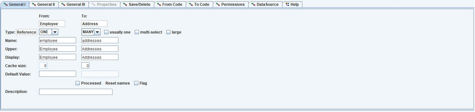
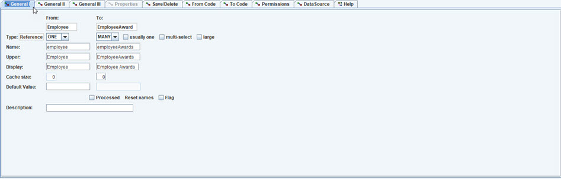
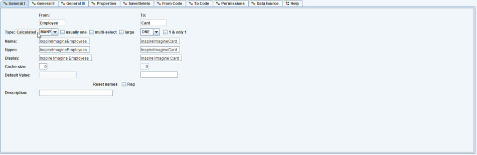
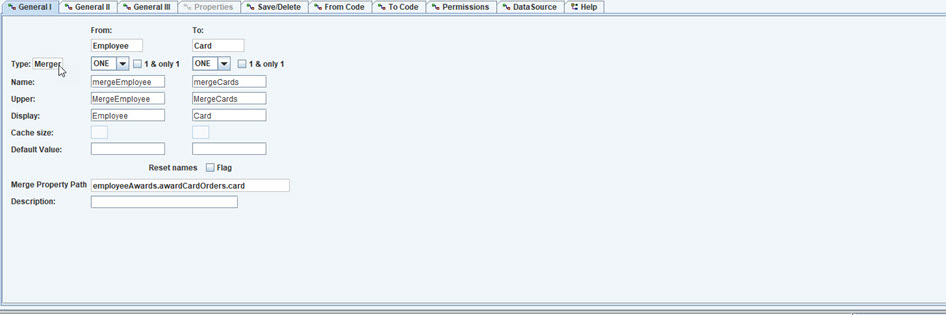
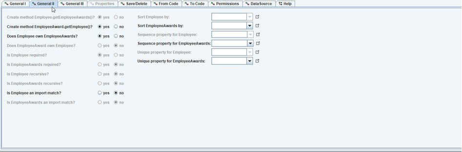
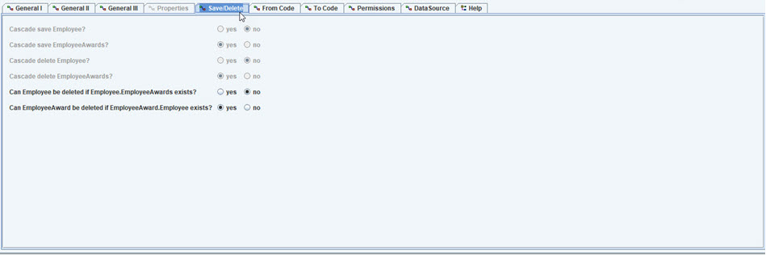
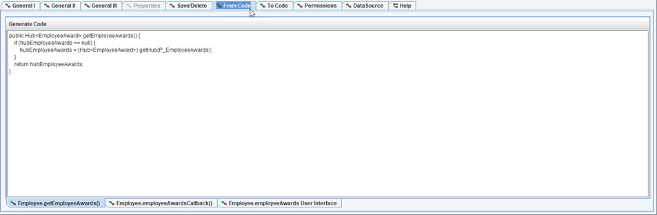

DataSource tab.
As with all of the editors in OABuilder, the default values are almost always what is needed, so there is no need to set each individual setting.
A link is created either by using the menu, right clicking on object and choose a link option, or by using the desktop menu's link command.

General tab, showing a regular reference link.

General tab, showing Hierarchy link.
This is created by right clicking an object and choosing the Hierarchy link.
This will allow selecting property path through other links to a property that
is defined in all of the links in the property path.
This allows a value to be set for all objects "below" it in the heirarchy.
General tab, showing Calculated link.
A calculated link uses code to get the reference object.
Properties (tab) is then used to determine what property paths are used to determined the value of the link.

General tab, showing Merger link. This is created by right clicking on an object, or
using main menu.
A Merger link is used to create a relationship using a property path, so that
all of the objects are combined into the collection.

General tab, showing GroupBy link. This is created by right clicking on an object, or
using main menu.
For example, an Item can have a list of open Orders - property path "Orders:open()".
This is done by right clicking Item, choosing GroupBy link,
then selecting property path for Object to select: "Orders:open()", and
then a second dialog to pick property path between Order and Item ("Order.orderItems.item")
General II tab. FYI: most of the time, the default values are all that is needed.

General III tab.
Properties tab. Used for Links that are calculated, to select the
dependent property path(s) used to create the link's values.
Save/Delete tab. Rules for save and delete. Cascading is
enabled for owned relationships.

From/To Code tabs.

From/To Code tabs, User Interface.
Permissions tab.
DataSource tab.